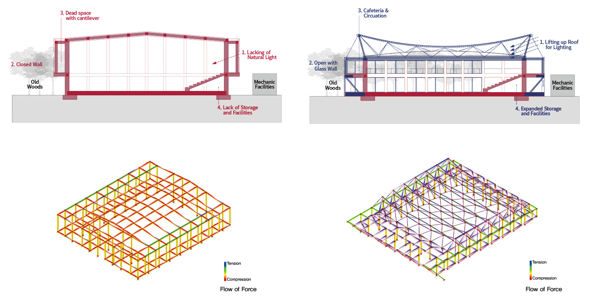

This is a renovation project of old gym in the campus of Korea National University of Arts. Since the area is restricted by Cultural Heritage Management regulation of the UNESCO, constructing new building or addition is banned. Thus, the proposal is to renovate roof and facade system to improve the quality of the inside space. The main strategy of this renovation is to retain the long span space with maximized natural lighting and pleasant envrioment which can provide the chance to experience the surrounding woods. To achieve these purposes, light roof system with undertension cable truss system and the double skin system with mesh are designed. As existing structures of reinforced concrete columns and beams is very sturdy enough to reuse, they are reused for the basis of the gym.
Obtaining Natural Iight by Using Cable Truss Roof: Applying the cabe truss roof system has three advantages. Firstly, lifted roof structure can earn more coming natural light. Also, it can open the upper space of the gym to outside, woods. Finally, because of its much lighter the roof than concrete ones, the roof can be installed on the existed structure, which means no other construction of foundation is needed.

Glass wall with, Openning and Closing: The gym is surrounded by old woods and grass. Connecting inside of the gym and outside, the woods, is the key to provide it with improve the quality of space. Also, opening to the nature can help users feel more comfortable, when they using this gym.

Circulation on Extended Cantilver Space: Before renovation, programs of cantilever aisle are uncertain. Giving the identity to these space, it is extended in order to function as independent space from main space. It can be used small and linear cafeteria and also used as circulation.
Facility Rooms under Extended Cantilver Space: Old gym did not have any enough space to use properly as storages, restrooms, locker rooms, and washrooms. Organizing the space uder the cantilever and stands, the gym can have more spare spaces to exploit service rooms, responding user's needs.